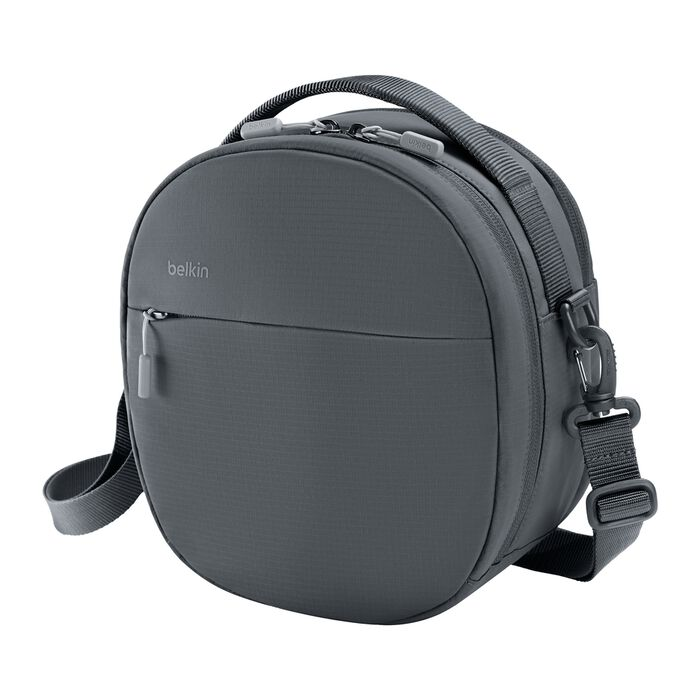
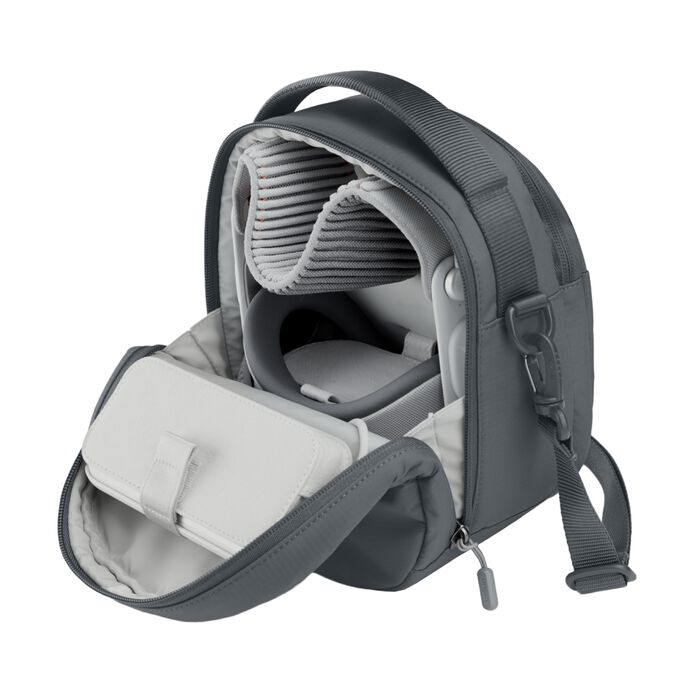
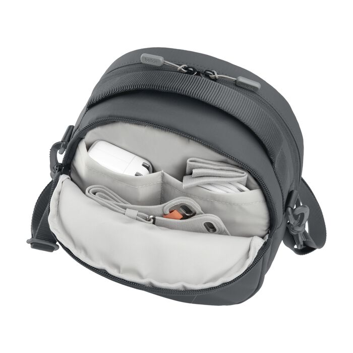
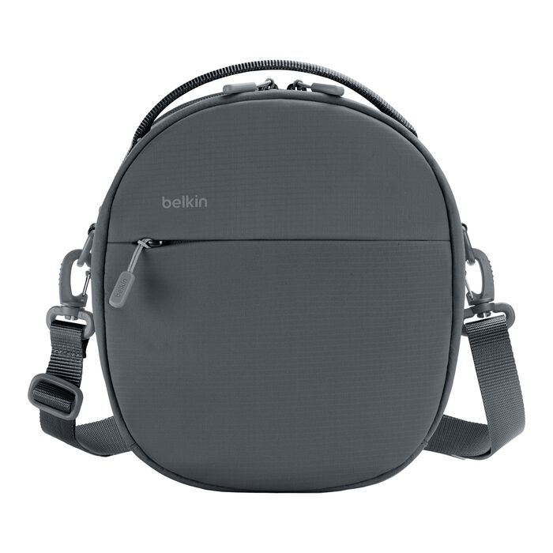

Take your headset wherever the trip goes.
A compact, padded cross-body bag made to carry an Apple Vision Pro, with a cushioned lens pillow, room for accessories and a hidden compartment for an AirTag — so the headset travels protected and your hands stay free.
Sold and shipped by Belkin. Price and availability are confirmed at Belkin.

Built around the headset.
Everything below is from Belkin's published product information. Belkin doesn't list dimensions or weight for this bag.


Hands free, headset protected.
A cross-body strap keeps the bag against you through airports and stations, and Belkin says it's compact enough to fit inside a backpack when you'd rather stow it.
- Carry it cross-body or over one shoulder, with a strap that adjusts from 30 to 55 inches
- Belkin's photos show organiser pockets inside, holding a charger and cables alongside the headset
- A hidden pocket for an AirTag lets you keep a tracker with the headset (you'll need to supply the AirTag)
Check these before you buy.

Confirm your headset
Belkin lists the bag for Apple Vision Pro but doesn't say which headset generation it covers, so check Belkin's product page for your model.
Check the size for your trip
Dimensions and weight aren't given on the Belkin page we checked, so confirm the bag suits your airline's or your backpack's limits before you travel.
The bag is sold on its own
The box contains the travel bag only. The headset, battery, cables and any AirTag are separate.
Ready to pack?
See Belkin's current price, delivery and returns terms for the Travel Bag for Apple Vision Pro.
Check price at BelkinBefore you order.
Which headset does it fit?
Belkin lists it for Apple Vision Pro. The product page doesn't say which headset generation it covers, so check Belkin's page for your model.
How do I carry it?
It has an adjustable strap, 30–55 in (76.2–139.7 cm), for cross-body or over-the-shoulder carry. Belkin also says it's compact enough to fit inside a backpack.
Does it protect the lens?
Belkin says a cushioned lens pillow folds down to protect the lens, and a padded base adds protection underneath. Belkin makes no drop or water-resistance claims on the page we checked.
Can I put a tracker in it?
Yes, there's a hidden AirTag compartment. An AirTag isn't included.
What's in the box?
The travel bag only. The headset, battery, cables and any tracker aren't included.
Why is there no price on this page?
Belkin sets and can change its prices, including sale prices, so we don't show one here. Select the button to see the current price at Belkin.
Has Samori World tested it?
No. This page uses Belkin's published product information and product photos. We don't publish test results for this product.